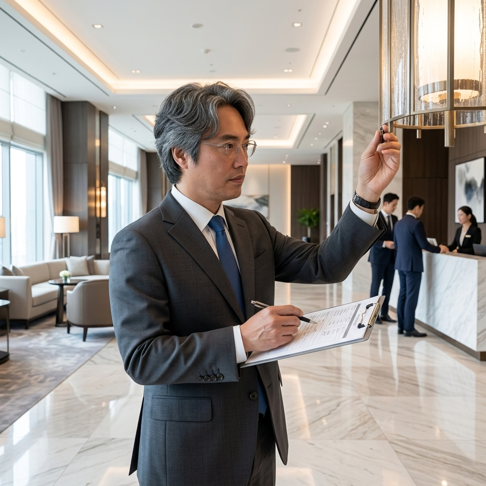
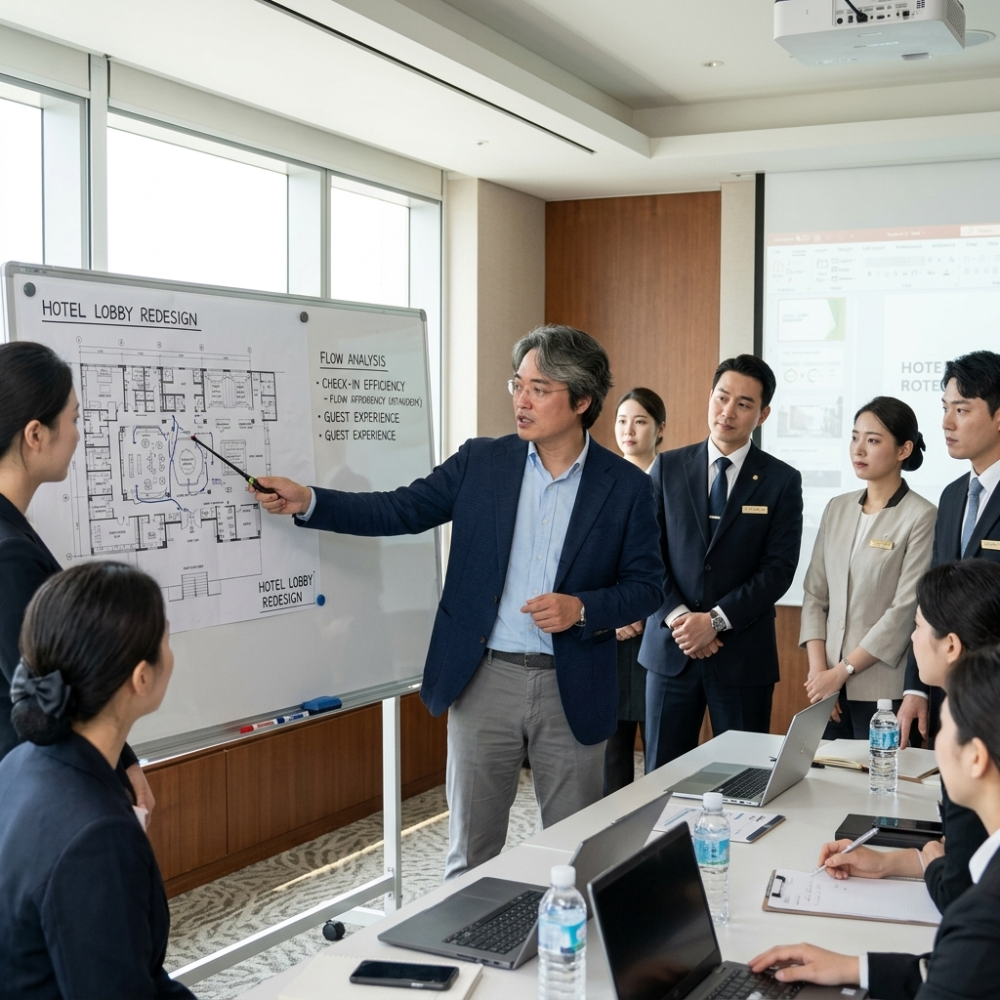
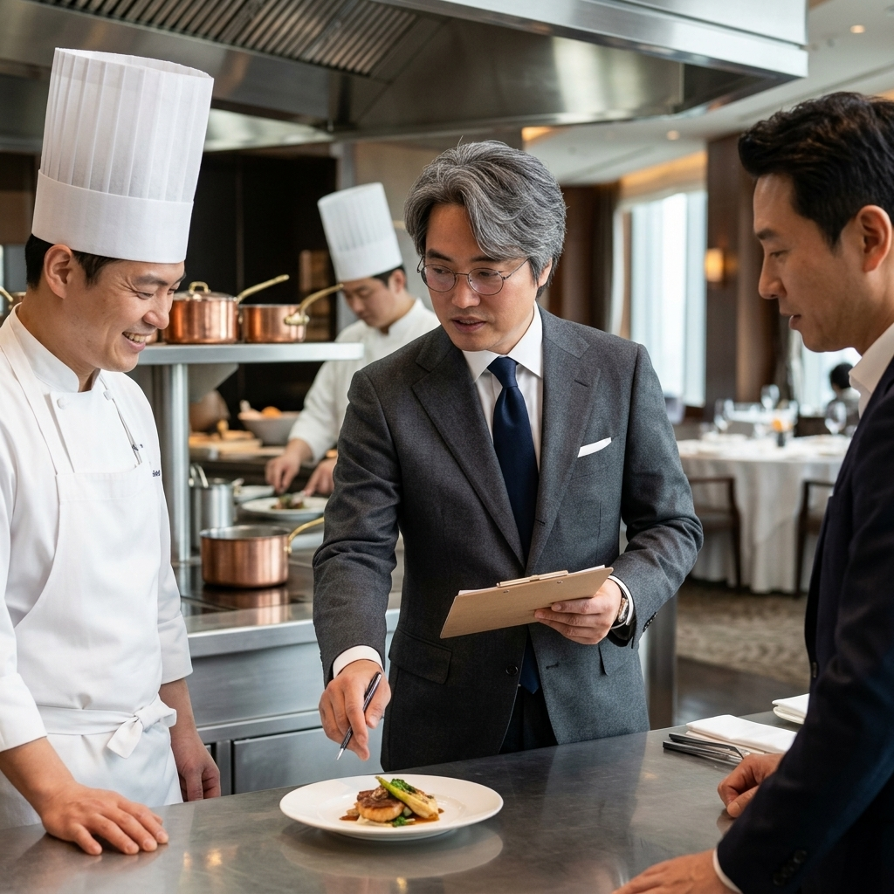

Advisory & Committee Activities
전문가로서의 자문 및 위원회 주요 활동

한국관광공사 호텔업등급결정요원(전문가)
한국관광공사에서 주관하는 전국 호텔업 등급 심사의 전문 평가 위원으로 활동하며 숙박 산업의 서비스 품질 향상에 기여하고 있습니다.
국제직업능력평가원 운영위원
국제직업능력평가원(IVQ) 운영위원으로 직업 능력 표준화 및 글로벌 기준에 맞춘 인재 역량 평가 시스템 고도화에 자문 역할을 수행합니다.

한국관광공사 호텔업등급 사전컨설팅 운영위원
호텔 등급 평가를 앞둔 기업을 대상으로 사전 컨설팅을 제공하는 운영위원으로서 현장 실무 맞춤형 지도를 제공합니다.

대한외식창업협회 전문위원
외식 창업 및 경영에 관련된 전문 지식을 바탕으로 대한외식창업협회의 전문위원으로 위촉되어 실질적인 솔루션을 자문합니다.